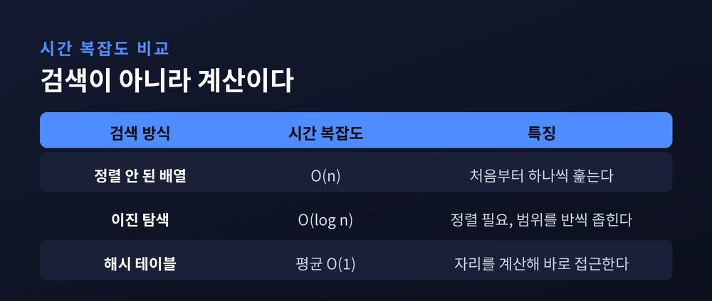
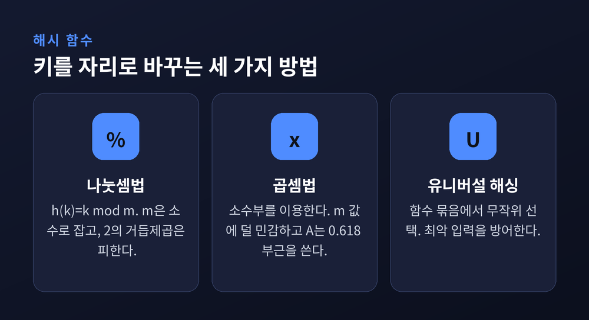
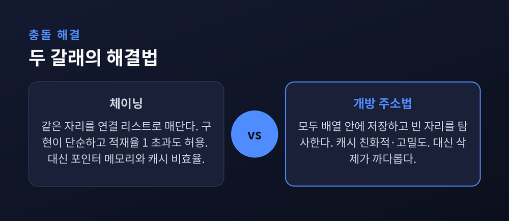
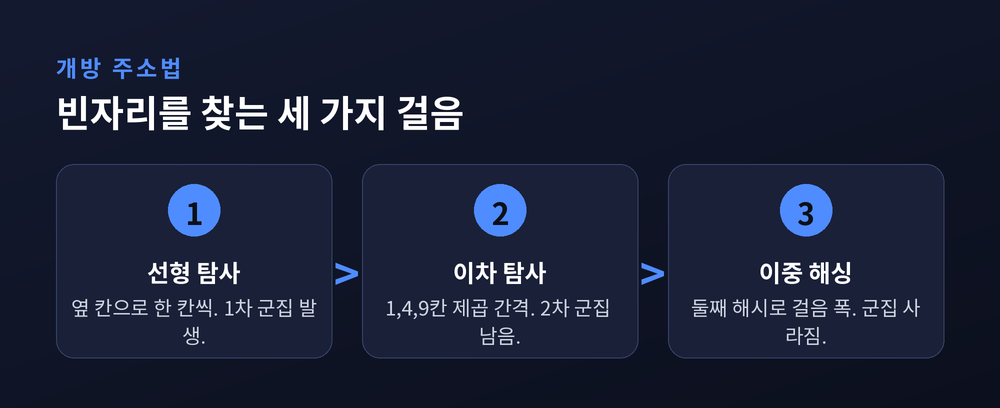
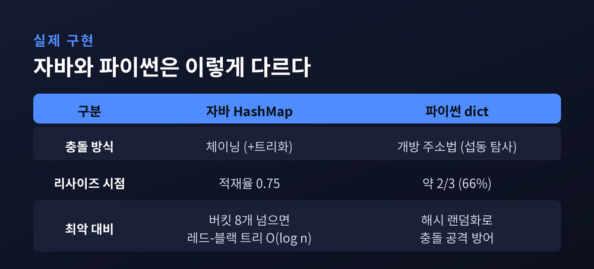

이번 글에서는 해시 테이블이 어떻게 데이터 수와 상관없이 거의 일정한 시간에 값을 찾아내는지를 원리 중심으로 정리해 보겠습니다. 수백만 개가 쌓여도 검색이 느려지지 않는 비결은 무엇인지, 해시 함수와 충돌 해결이라는 두 축을 따라가 봅니다.
해시 테이블의 출발점은 발상의 전환에 있습니다.
보통의 배열이나 리스트에서 원하는 값을 찾으려면 앞에서부터 하나씩 훑어야 합니다. 원소가 n개면 최악에는 n번을 봐야 하니 O(n)입니다. 정렬해 두고 이진 탐색을 써도 O(log n)까지가 한계입니다.
해시 테이블은 여기서 방향을 틀었습니다. "어디에 있는지 뒤지는" 대신 "어디에 있어야 하는지 계산하는" 쪽을 택했습니다.
키를 해시 함수에 넣으면 배열의 인덱스 하나가 곧바로 나옵니다. 그 자리로 한 번에 접근합니다. 배열의 임의 접근은 그 자체로 O(1)이므로, 저장된 데이터가 100개든 1억 개든 걸리는 시간은 크게 달라지지 않습니다.
그래서 해시 테이블의 검색·삽입·삭제는 평균적으로 O(1)입니다. 이 시간이 원소 수 n과 무관하다는 점이 핵심입니다.
다만 이 O(1)은 어디까지나 평균값입니다. 뒤에서 보겠지만, 조건이 어긋나면 최악에는 O(n)까지 나빠질 수 있습니다.

해시 테이블의 성능은 해시 함수에 달려 있습니다.
좋은 해시 함수의 조건은 하나로 요약됩니다. 키들을 버킷 전체에 최대한 고르게 흩뿌리는 것입니다. 한쪽에 몰리면 그만큼 충돌이 늘어납니다.
가장 기본은 나눗셈법입니다. 키 k를 테이블 크기 m으로 나눈 나머지를 인덱스로 씁니다. 식으로는 h(k) = k mod m입니다.
이때 m은 보통 소수로 잡습니다. 소수가 값의 군집을 줄여 주기 때문입니다. 반대로 m을 2의 거듭제곱으로 두면 안 됩니다. 그러면 해시값이 키의 하위 몇 비트만 반영하게 되어, 상위 비트에 담긴 정보가 통째로 버려집니다.
곱셈법도 자주 쓰입니다. 키에 0과 1 사이의 상수 A를 곱한 뒤, 그 소수부만 떼어 테이블 크기를 곱합니다. 식은 h(k) = ⌊ m · (k·A mod 1) ⌋입니다. 이 방식은 m 값에 덜 민감해서 계산이 편한 2의 거듭제곱을 그대로 써도 됩니다. A로는 황금비에서 온 0.618 정도의 값이 즐겨 쓰입니다.
한 걸음 더 나아간 것이 유니버설 해싱입니다. 해시 함수를 하나로 고정하지 않고, 여러 함수 묶음에서 무작위로 골라 씁니다. 특정 입력에 늘 최악이 되는 상황을 막기 위해서입니다. 실제로 파이썬은 이 아이디어를 확장한 해시 랜덤화로, 일부러 충돌을 유발하는 공격을 방어합니다.

서로 다른 두 키가 같은 인덱스를 얻는 일을 충돌이라 부릅니다.
충돌은 재수가 없어서 생기는 사고가 아닙니다. 저장할 수 있는 키의 종류가 버킷 수보다 많은 이상, 충돌은 반드시 일어납니다. 그래서 해시 테이블의 진짜 승부처는 "충돌을 어떻게 처리하느냐"입니다.
크게 두 갈래가 있습니다.
하나는 체이닝입니다. 같은 자리로 온 키들을 그 버킷에 연결 리스트로 매달아 둡니다. 새 키는 리스트 앞에 붙이면 그만이라 삽입이 평균·최악 모두 O(1)입니다. 기존 원소를 옮기지 않아 구현이 단순하고, 데이터가 버킷 수보다 많아져도 동작합니다. 대신 포인터를 위한 메모리가 더 들고, 여기저기 흩어진 노드를 따라가느라 캐시 효율이 떨어집니다.
다른 하나는 개방 주소법입니다. 별도 리스트 없이 모든 원소를 배열 안에 직접 넣습니다. 가려는 자리가 차 있으면 정해진 규칙으로 다음 빈 자리를 찾아갑니다. 배열 한 덩어리에 몰아 담으니 캐시에 친화적이고 메모리 밀도가 높습니다. 대신 자리가 차오를수록 급격히 느려지고, 삭제가 까다로워 지웠다는 표식을 따로 남겨야 합니다.

개방 주소법은 "다음 빈 자리를 어떻게 찾을까"에서 갈라집니다.
가장 단순한 것은 선형 탐사입니다. 막히면 바로 옆 칸, 그다음 칸으로 한 칸씩 옮겨 갑니다. 순서대로 훑으니 캐시에는 좋습니다. 그러나 점유된 칸들이 붙어 큰 덩어리를 이루는 1차 군집이 생깁니다. 덩어리가 커질수록 그 근처로 온 키는 덩어리 끝까지 밀려나 탐사가 길어집니다.
이차 탐사는 걸음 폭을 제곱으로 키웁니다. 1칸, 4칸, 9칸 식으로 건너뜁니다. 덩어리를 흩어 1차 군집은 피하지만, 같은 자리에서 출발한 키들이 같은 경로를 밟는 2차 군집은 남습니다.
이중 해싱은 두 번째 해시 함수로 걸음 폭 자체를 키마다 다르게 정합니다. 군집은 사실상 사라지지만, 널뛰듯 건너뛰는 탓에 캐시 성능은 나빠집니다.
완벽한 방법은 없습니다. 저마다 얻는 것과 내주는 것이 다를 뿐입니다.

해시 테이블이 얼마나 찼는지는 적재율로 잽니다. 저장된 원소 수를 버킷 수로 나눈 값입니다.
이 값이 커질수록 충돌이 잦아지고 성능이 처집니다. 그래서 임계값을 넘으면 리해싱을 합니다. 대략 두 배 큰 새 테이블을 만들고, 모든 키를 새 크기에 맞춰 다시 계산해 옮겨 담습니다.
리해싱 한 번은 원소 전부를 건드리니 O(n)짜리 비싼 작업입니다. 하지만 아주 드물게만 일어납니다. 여러 번의 값싼 연산에 이 비용을 나눠 얹으면, 평균으로는 여전히 O(1)이 유지됩니다. 이를 분할 상환이라 부릅니다.
임계 적재율은 정해진 상수가 아니라 구현마다 다른 경험칙입니다. 개방 주소법은 절반쯤 차면 리해시하는 것이 안전하고, 체이닝은 조금 더 여유가 있습니다.
교과서의 원리는 실제 언어 안에서 조금씩 다르게 구현됩니다.
자바의 HashMap은 체이닝을 씁니다. 기본 용량은 16, 기본 적재율은 0.75입니다. 16칸의 75%인 12개가 차면 용량을 두 배로 늘리고 전체를 재해시합니다.
예전에는 한 버킷에 충돌이 몰리면 그 안이 긴 연결 리스트가 되어 검색이 O(n)까지 처졌습니다. 지금은 다릅니다. 자바 8부터는 한 버킷의 노드가 8개를 넘고 전체 버킷이 64개 이상이면, 그 버킷을 레드-블랙 트리로 바꿉니다. 최악의 버킷 검색이 O(n)에서 O(log n)으로 올라섭니다. 노드가 6개 밑으로 줄면 다시 리스트로 되돌립니다.
파이썬의 dict는 개방 주소법을 씁니다. 다만 단순한 선형 탐사가 아닙니다. 해시값에서 뽑아낸 perturb라는 값을 매 걸음 5비트씩 밀어 넣어, 탐사 경로에 해시의 상위 비트까지 섞습니다. 덕분에 경로가 서로 겹치는 군집을 줄입니다. 리사이즈 시점도 자바보다 보수적이어서, 테이블이 3분의 2쯤 차면 키워 버립니다.

정리하면 이렇습니다.
해시 테이블의 O(1)은 마법이 아니라 계산과 관리의 합작입니다. 해시 함수가 자리를 곧장 계산해 주고, 충돌 해결과 리해싱이 그 계산이 어긋나지 않도록 뒤를 받칩니다.
그래서 저는 이 자료구조를 이렇게 요약하고 싶습니다 — "빠름은 공짜가 아니라, 잘 설계된 계산의 대가다."
평균 O(1)이라는 짧은 표기 뒤에는, 충돌을 인정하고 다스려 온 오랜 궁리가 접혀 있습니다. 다음에 해시맵을 무심코 쓰실 때, 그 한 줄 아래에서 돌아가는 계산을 잠시 떠올려 보시면 좋겠습니다.